PHTO_DGE_Analysis
Harsha Tamtam
2026-09-25
Last updated: 2026-09-25
Checks: 7 0
Knit directory: PHTO/
This reproducible R Markdown analysis was created with workflowr (version 1.7.2). The Checks tab describes the reproducibility checks that were applied when the results were created. The Past versions tab lists the development history.
Great! Since the R Markdown file has been committed to the Git repository, you know the exact version of the code that produced these results.
Great job! The global environment was empty. Objects defined in the global environment can affect the analysis in your R Markdown file in unknown ways. For reproduciblity it’s best to always run the code in an empty environment.
The command set.seed(20260812) was run prior to running
the code in the R Markdown file. Setting a seed ensures that any results
that rely on randomness, e.g. subsampling or permutations, are
reproducible.
Great job! Recording the operating system, R version, and package versions is critical for reproducibility.
Nice! There were no cached chunks for this analysis, so you can be confident that you successfully produced the results during this run.
Great job! Using relative paths to the files within your workflowr project makes it easier to run your code on other machines.
Great! You are using Git for version control. Tracking code development and connecting the code version to the results is critical for reproducibility.
The results in this page were generated with repository version 3096241. See the Past versions tab to see a history of the changes made to the R Markdown and HTML files.
Note that you need to be careful to ensure that all relevant files for
the analysis have been committed to Git prior to generating the results
(you can use wflow_publish or
wflow_git_commit). workflowr only checks the R Markdown
file, but you know if there are other scripts or data files that it
depends on. Below is the status of the Git repository when the results
were generated:
Ignored files:
Ignored: .Rhistory
Ignored: .Rproj.user/
Ignored: analysis/figure/
Untracked files:
Untracked: data/Emma_counts_file.csv
Untracked: data/Emma_metadata_updated_all.RDS
Untracked: data/Ensembl_Entrez_Symbol_table.RDS
Untracked: data/PHTO_filtered_log2_cpm.RDS
Untracked: data/PHTO_lookup_table.RDS
Untracked: data/PHTO_toptable_results.RDS
Untracked: data/dge_list.RDS
Unstaged changes:
Deleted: analysis/first-analysis.Rmd
Note that any generated files, e.g. HTML, png, CSS, etc., are not included in this status report because it is ok for generated content to have uncommitted changes.
These are the previous versions of the repository in which changes were
made to the R Markdown (analysis/PHTO_DGE_Analysis.Rmd) and
HTML (docs/PHTO_DGE_Analysis.html) files. If you’ve
configured a remote Git repository (see ?wflow_git_remote),
click on the hyperlinks in the table below to view the files as they
were in that past version.
| File | Version | Author | Date | Message |
|---|---|---|---|---|
| Rmd | 3096241 | Harsha Tamtam | 2026-09-25 | wflow_publish("analysis/PHTO_DGE_Analysis.Rmd") |
Introduction
Library Section
library(tidyverse)
library(dplyr)
library(tibble)
library(scales)
library(cowplot)
library(edgeR)
library(smplot2)
library(ggpubr)
library(workflowr)
library(ComplexHeatmap)
library(RColorBrewer)
library(gridExtra)
library(ggrepel)
library(ggVennDiagram)
library(grid)
library(ggrepel)
library(org.Hs.eg.db)
library(enrichplot)
library(clusterProfiler)
library(circlize)
library(gprofiler2)
library(stringr)
library(readr)
library(GO.db)
library(AnnotationDbi)
library(plotrix)File Calling
PHTO_metadata <- readRDS("data/Emma_metadata_updated_all.RDS")
PHTO_counts <- read.csv("data/Emma_counts_file.csv")
working_counts_file <- PHTO_counts %>%
as.data.frame() %>%
rename(., Ensembl = gene_id) %>%
pivot_longer(-Ensembl, names_to = "Samples", values_to = "raw_counts") %>%
left_join(PHTO_metadata, by = c("Samples" = "Sample_ID")) %>%
dplyr::filter(!Stimulus %in% c("EtOH", "PFOA", "BPA")) %>%
dplyr::filter(Time == 24) %>%
dplyr::select(Ensembl, raw_counts, Final_sample_name) %>%
pivot_wider(names_from = Final_sample_name, values_from = raw_counts) %>%
column_to_rownames("Ensembl")
working_metadata_file <- PHTO_metadata %>%
dplyr::filter(!Stimulus %in% c("EtOH", "PFOA", "BPA")) %>%
dplyr::filter(Time == 24) %>%
dplyr::mutate(
Grouping = case_when(
Species == "C" & Stimulus == "DMSO" ~ "Chimp_DMSO",
Species == "H" & Stimulus == "DMSO" ~ "Human_DMSO",
Species == "C" & Stimulus == "H2O" ~ "Chimp_H2O",
Species == "H" & Stimulus == "H2O" ~ "Human_H2O",
Species == "C" & Stimulus == "DOX" ~ "Chimp_DOX",
Species == "H" & Stimulus == "DOX" ~ "Human_DOX",
Species == "C" & Stimulus == "NUTL" ~ "Chimp_NUTL",
Species == "H" & Stimulus == "NUTL" ~ "Human_NUTL",
Species == "C" & Stimulus == "TUN" ~ "Chimp_TUN",
Species == "H" & Stimulus == "TUN" ~ "Human_TUN",
Species == "C" & Stimulus == "THA" ~ "Chimp_THA",
Species == "H" & Stimulus == "THA" ~ "Human_THA",
Species == "C" & Stimulus == "LPS" ~ "Chimp_LPS",
Species == "H" & Stimulus == "LPS" ~ "Human_LPS",
Species == "C" & Stimulus == "TNFa" ~ "Chimp_TNFa",
Species == "H" & Stimulus == "TNFa" ~ "Human_TNFa"
)
)Converting to Log2 CPM and filtering rowMeans log2cpm > 0:
log2cpm <- cpm(working_counts_file, log = TRUE)
filtered_counts <- working_counts_file[rowMeans(log2cpm)> 0,]
# dim(filtered_counts)
# str(filtered_counts)I will be ensuring my factors for the contrast matrices I will make are set correctly, but I need to make new data tables for each treatment type
Identifying DGEs for each Response Set (DDR, UPR, IMR)
DNA Damage Response (DDR) DGE, Voom, and Contrast Matrix Development
Using model matrix (~ Species * Stimulus)
Using model matrix (~ 0 + Grouping)
Using model matrix (~ 0 + Species:Stimulus)
Comparison of model.matricies for DDR
Unfolding Protein Response (UPR) DGE, Voom, and Contrast Matrix Development
Innate Immune Response (IMR) DGE, Voom, and Contrast Matrix Development
Identifying DGEs for ALL Responses as One Set
Using model.matrix(~0 + Species:Stimulus)
Using model.matrix(~0 + Grouping)
Using model.matrix (~ Species * Stimulus), using Chimp and H2O as my references
filtered_counts <- filtered_counts[, working_metadata_file$Final_sample_name] # Run this to explicitly ensure sample ordering is identical between counts and metadata file
# # Creating DDR-specific DGE list
all_dge <- DGEList(
counts = filtered_counts
)
all_dge <- calcNormFactors(
all_dge,
method = "TMM"
)
# # Building the DDR design matrix
working_metadata_file$Stimulus <- factor(
working_metadata_file$Stimulus,
levels = c("H2O", # Water is leveled first because this will be our reference
"DMSO",
"DOX",
"NUTL",
"TUN",
"THA",
"TNFa",
"LPS"
)
)
working_metadata_file$Species <- relevel(
factor(working_metadata_file$Species),
ref = "C"
)
working_metadata_file$Stimulus <- relevel(
factor(working_metadata_file$Stimulus),
ref = "H2O"
) # We are setting the Stimulus reference to H2O because DMSO is dissolved in H2O
all_dge_design <- model.matrix(
~ Species * Stimulus, # ORDER MATTERS: here, with species first and stimulus second, I am controlling for species while observing interactions of the main effect, stimulus
data = working_metadata_file
)
colnames(all_dge_design) [1] "(Intercept)" "SpeciesH" "StimulusDMSO"
[4] "StimulusDOX" "StimulusNUTL" "StimulusTUN"
[7] "StimulusTHA" "StimulusTNFa" "StimulusLPS"
[10] "SpeciesH:StimulusDMSO" "SpeciesH:StimulusDOX" "SpeciesH:StimulusNUTL"
[13] "SpeciesH:StimulusTUN" "SpeciesH:StimulusTHA" "SpeciesH:StimulusTNFa"
[16] "SpeciesH:StimulusLPS" # all_dge_design
colnames(all_dge_design) <- c(
"Intercept", # means Chimp + H2O
"SpeciesH", # means Human vs Chimp under H2O
"StimulusDMSO", # means Chimp DMSO vs H2O
"StimulusDOX", # means Chimp DOX vs H2O
"StimulusNUTL", # means Chimp NUTL vs H2O
"StimulusTUN", # means Chimp TUN vs H2O
"StimulusTHA", # means Chimp THA vs H2O
"StimulusTNFa", # means Chimp TNFa vs H2O
"StimulusLPS", # means Chimp LPS vs H2O
"SpeciesH_StimulusDMSO", # means (Human DMSO vs H2O) - (Chimp DMSO vs H2O)
"SpeciesH_StimulusDOX", # means (Human DOX vs H2O) - (Chimp DOX vs H2O)
"SpeciesH_StimulusNUTL", # means (Human NUTL vs H2O) - (Chimp NUTL vs H2O)
"SpeciesH_StimulusTUN", # means (Human TUN vs H2O) - (Chimp TUN vs H2O)
"SpeciesH_StimulusTHA", # means (Human THA vs H2O) - (Chimp THA vs H2O)
"SpeciesH_StimulusTNFa", # means (Human TNFa vs H2O) - (Chimp TNFa vs H2O)
"SpeciesH_StimulusLPS" # means (Human LPS vs H2O) - (Chimp LPS vs H2O)
)
# Running Duplicate Correlations
all_dge_cor_fit <- duplicateCorrelation(object = all_dge$counts,
design = all_dge_design,
block = working_metadata_file$Ind
)
all_dge_voom_trend <- voom(all_dge,
all_dge_design,
block = working_metadata_file$Ind,
correlation = all_dge_cor_fit$consensus.correlation,
plot = FALSE)
# Fitting linear model
all_dge_fit <- lmFit(
all_dge_voom_trend,
all_dge_design,
block = working_metadata_file$Ind,
correlation = all_dge_cor_fit$consensus.correlation
)
# head(all_dge_design)
# Defining contrasts
all_dge_contrast_matrix <- makeContrasts(
#Setting my reference control
Human_vs_Chimp_H2O =
SpeciesH,
# -------------------------------------------------------------------------
# DMSO comparisons
Chimp_DMSO_vs_H2O =
StimulusDMSO,
Human_DMSO_vs_H2O =
StimulusDMSO + SpeciesH_StimulusDMSO,
Human_vs_Chimp_DMSO =
SpeciesH + SpeciesH_StimulusDMSO,
Interaction_DMSO =
SpeciesH_StimulusDMSO,
# -------------------------------------------------------------------------
# IMR comparisons
Chimp_TNFa_vs_H2O =
StimulusTNFa,
Human_TNFa_vs_H2O =
StimulusTNFa + SpeciesH_StimulusTNFa,
Human_vs_Chimp_TNFa =
SpeciesH + SpeciesH_StimulusTNFa,
TNFa_Interaction =
SpeciesH_StimulusTNFa,
# -------------------------------------------------------------------------
Chimp_LPS_vs_H2O =
StimulusLPS,
Human_LPS_vs_H2O =
StimulusLPS + SpeciesH_StimulusLPS,
Human_vs_Chimp_LPS =
SpeciesH + SpeciesH_StimulusLPS,
LPS_Interaction =
SpeciesH_StimulusLPS,
# -------------------------------------------------------------------------
# DDR comparisons
Human_vs_Chimp_DOX =
SpeciesH + SpeciesH_StimulusDOX,
Chimp_DOX_vs_DMSO =
StimulusDOX - StimulusDMSO, # This outputs: ((Chimp DOX - Chimp H2O) - (Chimp DMSO - Chimp H2O)) = Chimp DOX - Chimp DMSO
Human_DOX_vs_DMSO =
StimulusDOX - StimulusDMSO + # This outputs: Chimp DOX - Chimp DMSO
SpeciesH_StimulusDOX - # This outputs: (Human DOX vs Human H2O) - (Chimp DOX vs Chimp H2O)
SpeciesH_StimulusDMSO, # This outputs: -[(Human DMSO vs Human H2O) - (Chimp DMSO vs Chimp H2O)]
# The long equation becomes: Chimp DOX - Chimp DMSO + Human DOX - Human H2O - Chimp DOX + Chimp H2O - Human DMSO + Human H2O + Chimp DMSO - Chimp H2O
# OVERALL, this outputs: (Human DOX - Chimp H2O) - (Human DMSO - Chimp H2O) = **Human DOX - Human DMSO**
# This works because the "vs" symbols between attributes act like minus signs. As a result, terms cancel and we are left with the final result
DOX_Interaction =
SpeciesH_StimulusDOX -
SpeciesH_StimulusDMSO,
# -------------------------------------------------------------------------
Human_vs_Chimp_NUTL =
SpeciesH + SpeciesH_StimulusNUTL,
Chimp_NUTL_vs_DMSO =
StimulusNUTL - StimulusDMSO,
Human_NUTL_vs_DMSO =
StimulusNUTL - StimulusDMSO +
SpeciesH_StimulusNUTL -
SpeciesH_StimulusDMSO,
NUTL_Interaction =
SpeciesH_StimulusNUTL -
SpeciesH_StimulusDMSO,
# -------------------------------------------------------------------------
# UPR comparisons
Human_vs_Chimp_TUN =
SpeciesH + SpeciesH_StimulusTUN,
Chimp_TUN_vs_DMSO =
StimulusTUN - StimulusDMSO,
Human_TUN_vs_DMSO =
StimulusTUN - StimulusDMSO +
SpeciesH_StimulusTUN -
SpeciesH_StimulusDMSO,
TUN_Interaction =
SpeciesH_StimulusTUN -
SpeciesH_StimulusDMSO,
# -------------------------------------------------------------------------
Human_vs_Chimp_THA =
SpeciesH + SpeciesH_StimulusTHA,
Chimp_THA_vs_DMSO =
StimulusTHA - StimulusDMSO,
Human_THA_vs_DMSO =
StimulusTHA - StimulusDMSO +
SpeciesH_StimulusTHA -
SpeciesH_StimulusDMSO,
THA_Interaction =
SpeciesH_StimulusTHA -
SpeciesH_StimulusDMSO,
# -------------------------------------------------------------------------
levels = all_dge_design
)
# Applying contrasts across samples
all_dge_fit2 <- contrasts.fit(all_dge_fit, all_dge_contrast_matrix)
all_dge_efit2 <- eBayes(all_dge_fit2)
all_dge_signif_gene_results = decideTests(all_dge_efit2, adjust.method = "BH", p.value = 0.05)
summary(all_dge_signif_gene_results) Human_vs_Chimp_H2O Chimp_DMSO_vs_H2O Human_DMSO_vs_H2O
Down 2612 0 0
NotSig 8893 14217 14217
Up 2712 0 0
Human_vs_Chimp_DMSO Interaction_DMSO Chimp_TNFa_vs_H2O Human_TNFa_vs_H2O
Down 2514 0 4 0
NotSig 9130 14217 14085 14176
Up 2573 0 128 41
Human_vs_Chimp_TNFa TNFa_Interaction Chimp_LPS_vs_H2O Human_LPS_vs_H2O
Down 2487 0 0 0
NotSig 9070 14217 14204 14216
Up 2660 0 13 1
Human_vs_Chimp_LPS LPS_Interaction Human_vs_Chimp_DOX Chimp_DOX_vs_DMSO
Down 2673 0 2467 4986
NotSig 8702 14217 8901 4843
Up 2842 0 2849 4388
Human_DOX_vs_DMSO DOX_Interaction Human_vs_Chimp_NUTL Chimp_NUTL_vs_DMSO
Down 4735 659 2739 526
NotSig 5186 12679 8780 13105
Up 4296 879 2698 586
Human_NUTL_vs_DMSO NUTL_Interaction Human_vs_Chimp_TUN Chimp_TUN_vs_DMSO
Down 651 1 2448 1818
NotSig 13048 14215 9181 10677
Up 518 1 2588 1722
Human_TUN_vs_DMSO TUN_Interaction Human_vs_Chimp_THA Chimp_THA_vs_DMSO
Down 1746 7 2526 2471
NotSig 10711 14191 9099 9610
Up 1760 19 2592 2136
Human_THA_vs_DMSO THA_Interaction
Down 2329 18
NotSig 9960 14173
Up 1928 26length(colnames(all_dge_signif_gene_results))[1] 29plotSA(all_dge_efit2, main = "Mean-variance All Response Samples final model trend")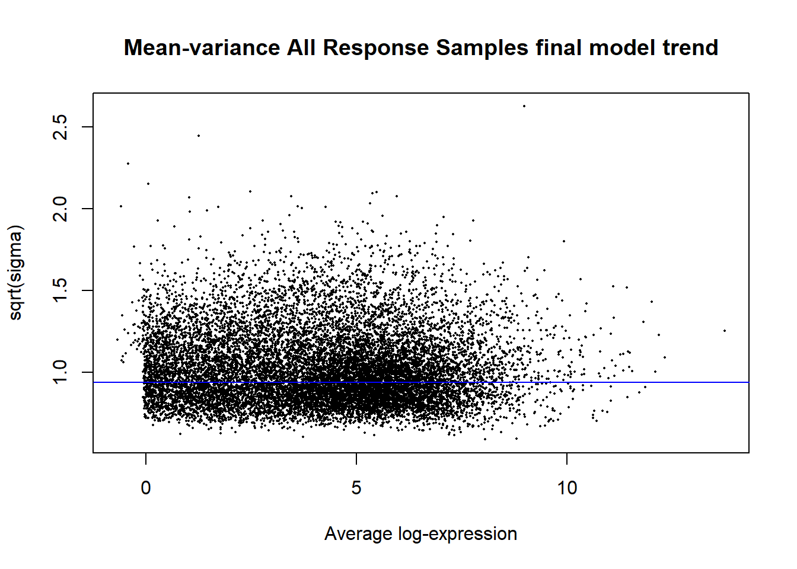
Toptable Assignments
Human_vs_Chimp_H2O <- topTable(all_dge_efit2, coef = "Human_vs_Chimp_H2O", adjust.method = "BH", p.value = 1, number = Inf)
Chimp_DMSO_vs_H2O <- topTable(all_dge_efit2, coef = "Chimp_DMSO_vs_H2O", adjust.method = "BH", p.value = 1, number = Inf)
Human_DMSO_vs_H2O <- topTable(all_dge_efit2, coef = "Human_DMSO_vs_H2O", adjust.method = "BH", p.value = 1, number = Inf)
Human_vs_Chimp_DMSO <- topTable(all_dge_efit2, coef = "Human_vs_Chimp_DMSO", adjust.method = "BH", p.value = 1, number = Inf)
Interaction_DMSO <- topTable(all_dge_efit2, coef = "Interaction_DMSO", adjust.method = "BH", p.value = 1, number = Inf)
Chimp_TNFa_vs_H2O <- topTable(all_dge_efit2, coef = "Chimp_TNFa_vs_H2O", adjust.method = "BH", p.value = 1, number = Inf)
Human_TNFa_vs_H2O <- topTable(all_dge_efit2, coef = "Human_TNFa_vs_H2O", adjust.method = "BH", p.value = 1, number = Inf)
Human_vs_Chimp_TNFa <- topTable(all_dge_efit2, coef = "Human_vs_Chimp_TNFa", adjust.method = "BH", p.value = 1, number = Inf)
TNFa_Interaction <- topTable(all_dge_efit2, coef = "TNFa_Interaction", adjust.method = "BH", p.value = 1, number = Inf)
Chimp_LPS_vs_H2O <- topTable(all_dge_efit2, coef = "Chimp_LPS_vs_H2O", adjust.method = "BH", p.value = 1, number = Inf)
Human_LPS_vs_H2O <- topTable(all_dge_efit2, coef = "Human_LPS_vs_H2O", adjust.method = "BH", p.value = 1, number = Inf)
Human_vs_Chimp_LPS <- topTable(all_dge_efit2, coef = "Human_vs_Chimp_LPS", adjust.method = "BH", p.value = 1, number = Inf)
LPS_Interaction <- topTable(all_dge_efit2, coef = "LPS_Interaction", adjust.method = "BH", p.value = 1, number = Inf)
Human_vs_Chimp_DOX <- topTable(all_dge_efit2, coef = "Human_vs_Chimp_DOX", adjust.method = "BH", p.value = 1, number = Inf)
Chimp_DOX_vs_DMSO <- topTable(all_dge_efit2, coef = "Chimp_DOX_vs_DMSO", adjust.method = "BH", p.value = 1, number = Inf)
Human_DOX_vs_DMSO <- topTable(all_dge_efit2, coef = "Human_DOX_vs_DMSO", adjust.method = "BH", p.value = 1, number = Inf)
DOX_Interaction <- topTable(all_dge_efit2, coef = "DOX_Interaction", adjust.method = "BH", p.value = 1, number = Inf)
Human_vs_Chimp_NUTL <- topTable(all_dge_efit2, coef = "Human_vs_Chimp_NUTL", adjust.method = "BH", p.value = 1, number = Inf)
Chimp_NUTL_vs_DMSO <- topTable(all_dge_efit2, coef = "Chimp_NUTL_vs_DMSO", adjust.method = "BH", p.value = 1, number = Inf)
Human_NUTL_vs_DMSO <- topTable(all_dge_efit2, coef = "Human_NUTL_vs_DMSO", adjust.method = "BH", p.value = 1, number = Inf)
NUTL_Interaction <- topTable(all_dge_efit2, coef = "NUTL_Interaction", adjust.method = "BH", p.value = 1, number = Inf)
Human_vs_Chimp_TUN <- topTable(all_dge_efit2, coef = "Human_vs_Chimp_TUN", adjust.method = "BH", p.value = 1, number = Inf)
Chimp_TUN_vs_DMSO <- topTable(all_dge_efit2, coef = "Chimp_TUN_vs_DMSO", adjust.method = "BH", p.value = 1, number = Inf)
Human_TUN_vs_DMSO <- topTable(all_dge_efit2, coef = "Human_TUN_vs_DMSO", adjust.method = "BH", p.value = 1, number = Inf)
TUN_Interaction <- topTable(all_dge_efit2, coef = "TUN_Interaction", adjust.method = "BH", p.value = 1, number = Inf)
Human_vs_Chimp_THA <- topTable(all_dge_efit2, coef = "Human_vs_Chimp_THA", adjust.method = "BH", p.value = 1, number = Inf)
Chimp_THA_vs_DMSO <- topTable(all_dge_efit2, coef = "Chimp_THA_vs_DMSO", adjust.method = "BH", p.value = 1, number = Inf)
Human_THA_vs_DMSO <- topTable(all_dge_efit2, coef = "Human_THA_vs_DMSO", adjust.method = "BH", p.value = 1, number = Inf)
THA_Interaction <- topTable(all_dge_efit2, coef = "THA_Interaction", adjust.method = "BH", p.value = 1, number = Inf)
save_PHTO_toptable_list <- list(
"HvC_H2O"=Human_vs_Chimp_H2O,
"C_DMSOvH2O"=Chimp_DMSO_vs_H2O,
"H_DMSOvH2O"=Human_DMSO_vs_H2O,
"HvC_DMSO"=Human_vs_Chimp_DMSO,
"Int_DMSO"=Interaction_DMSO,
"C_TNFavH2O"=Chimp_TNFa_vs_H2O,
"H_TNFavH2O"=Human_TNFa_vs_H2O,
"HvC_TNFa"=Human_vs_Chimp_TNFa,
"Int_TNFa"=TNFa_Interaction,
"C_LPSvH2O"=Chimp_LPS_vs_H2O,
"H_LPSvH2O"=Human_LPS_vs_H2O,
"HvC_LPS"=Human_vs_Chimp_LPS,
"Int_LPS"=LPS_Interaction,
"HvC_DOX"=Human_vs_Chimp_DOX,
"C_DOXvDMSO"=Chimp_DOX_vs_DMSO,
"H_DOXvDMSO"=Human_DOX_vs_DMSO,
"Int_DOX"=DOX_Interaction,
"HvC_NUTL"=Human_vs_Chimp_NUTL,
"C_NUTLvDMSO"=Chimp_NUTL_vs_DMSO,
"H_NUTLvDMSO"=Human_NUTL_vs_DMSO,
"Int_NUTL"=NUTL_Interaction,
"HvC_TUN"=Human_vs_Chimp_TUN,
"C_TUNvDMSO"=Chimp_TUN_vs_DMSO,
"H_TUNvDMSO"=Human_TUN_vs_DMSO,
"Int_TUN"=TUN_Interaction,
"HvC_THA"=Human_vs_Chimp_THA,
"C_THAvDMSO"=Chimp_THA_vs_DMSO,
"H_THAvDMSO"=Human_THA_vs_DMSO,
"Int_THA"=THA_Interaction
)
saveRDS(save_PHTO_toptable_list, "data/PHTO_toptable_results.RDS")Look Up Table for all Ensembls of interest
## Extracting all unique Ensembl IDs
PHTO_toptable_results <- readRDS("data/PHTO_toptable_results.RDS")
all_ensembls <- PHTO_toptable_results %>%
purrr::map(rownames) %>%
unlist() %>%
unique()
# length(all_ensembl)
#
# head(all_ensembl)
## Mapping Ensembls to their respective Symbols and Entrez IDs
PHTO_annotation_df <- AnnotationDbi::select(
org.Hs.eg.db,
keys = all_ensembls,
keytype = "ENSEMBL",
columns = c(
"ENSEMBL",
"ENTREZID",
"SYMBOL"
)
) %>%
dplyr::distinct(
ENSEMBL,
.keep_all = TRUE
)
PHTO_lookup_table <- tibble::tibble(
Ensembl = all_ensembls
) %>%
dplyr::left_join(
PHTO_annotation_df,
by = c("Ensembl" = "ENSEMBL")
) %>%
dplyr::rename(
Entrez_ID = ENTREZID,
Symbol = SYMBOL
)
PHTO_ensembl_to_gene_mapping_sucess <- PHTO_lookup_table %>%
dplyr::summarise(
Total = dplyr::n(),
Symbol_mapped = sum(!is.na(Symbol)),
Symbol_unmapped = sum(is.na(Symbol)),
Entrez_mapped = sum(!is.na(Entrez_ID)),
Entrez_unmapped = sum(is.na(Entrez_ID))
)
PHTO_ensembl_to_gene_mapping_sucess# A tibble: 1 × 5
Total Symbol_mapped Symbol_unmapped Entrez_mapped Entrez_unmapped
<int> <int> <int> <int> <int>
1 14217 12927 1290 12927 1290saveRDS(PHTO_lookup_table, "data/PHTO_lookup_table.RDS")Volcano Plots
PHTO_toptable_results <- readRDS("data/PHTO_toptable_results.RDS")
PHTO_lookup_table <- readRDS("data/PHTO_lookup_table.RDS")
PHTO_toptable_list <- list(
"HvC_H2O",
"C_DMSOvH2O",
"H_DMSOvH2O",
"HvC_DMSO",
"Int_DMSO",
"C_TNFavH2O",
"H_TNFavH2O",
"HvC_TNFa",
"Int_TNFa",
"C_LPSvH2O",
"H_LPSvH2O",
"HvC_LPS",
"Int_LPS",
"HvC_DOX",
"C_DOXvDMSO",
"H_DOXvDMSO",
"Int_DOX",
"HvC_NUTL",
"C_NUTLvDMSO",
"H_NUTLvDMSO",
"Int_NUTL",
"HvC_TUN",
"C_TUNvDMSO",
"H_TUNvDMSO",
"Int_TUN",
"HvC_THA",
"C_THAvDMSO",
"H_THAvDMSO",
"Int_THA"
)
generate_volcano_plot <- function(toptable, list_name) {
volcano_colors <- toptable %>%
tibble::rownames_to_column("Genes") %>%
dplyr::left_join(PHTO_lookup_table %>%
tibble::rownames_to_column("Ensemble") %>%
dplyr::select(Ensemble, Symbol),
by = c("Genes" = "Ensemble")) %>%
dplyr::mutate(
id_label = ifelse(
is.na(Symbol),
Genes,
Symbol
)
) %>%
dplyr::mutate(
neglog10AdjP = -log10(pmax(adj.P.Val, 1e-300)),
color_key = case_when(
adj.P.Val < 0.05 & logFC > 0 ~ "Up",
adj.P.Val < 0.05 & logFC < 0 ~ "Down",
TRUE ~ "NS"
)
)
top_genes <- volcano_colors %>%
dplyr::arrange(adj.P.Val) %>%
dplyr::filter(adj.P.Val < 0.05) %>%
slice_head(n = 20)
gene_counts <- volcano_colors %>%
dplyr::summarise(
Up = sum(color_key == "Up"),
Down = sum(color_key == "Down"),
NS = sum(color_key == "NS")
)
# genes_of_interest <- volcano_colors %>%
# dplyr::filter(id_label %in% c("ASPHD2", "C1R", "PARP12", "GBP2", "TNFSF13B", "TUBB", "GRAMD2A", "FAM107A", "ZCWPW2", "TRIB1", "C1S", "CD47", "SFT2D2", "CIBAR1", "IFITM2", "TESK2", "STAMBPL", "NUP58", "BPGM", "CIMAP3", "CD9", "CFH", "SLC35A4", "ENSG00000284048", "UST", "A2M", "CACHD1", "VPS13C", "FBXO31", "NORAD"))
p <- ggplot(
volcano_colors,
aes(x = logFC, y = neglog10AdjP)
) +
geom_point(
aes(color = color_key),
size = 2,
alpha = 0.6
) +
# coord_cartesian(
# xlim = c(-12, 12),
# ylim = c(0, 20)
# ) +
# geom_vline(
# xintercept = c(-1,1),
# linetype = "dashed"
# ) +
# geom_hline(
# yintercept = -log10(0.05),
# linetype = "dashed"
# ) +
geom_text_repel(
data = top_genes,
aes(label = id_label),
size = 3,
max.overlaps = Inf,
box.padding = 0.5
) +
scale_color_manual(
name = NULL,
values = c(
"Up" = "red",
"Down" = "blue",
"NS" = "grey50"
),
labels = c(
"Up" = paste0("Up (n = ", gene_counts$Up, ")"),
"Down" = paste0("Down (n = ", gene_counts$Down, ")"),
"NS" = paste0("NS (n = ", gene_counts$NS, ")")
)
) +
labs(
title = list_name,
x = "log2FC",
y = "-log10(Adj.P-value)"
) +
theme_classic(
) +
theme(
plot.title = element_text(
hjust = 0.6,
size = 16,
face = "bold"
),
text = element_text(
size = 12
)
)
list(
plot = p,
top = top_genes,
counts = gene_counts
#interesting_genes = genes_of_interest
)
}
for (i in seq_along(PHTO_toptable_results)) {
results <- generate_volcano_plot(
PHTO_toptable_results[[i]],
PHTO_toptable_list[[i]]
)
## The code below gives written summaries in the console
cat(
"\n",
PHTO_toptable_list[[i]],
": Up =", results$counts$Up,
"| Down =", results$counts$Down,
"\n"
)
print(results$plot) #This prints the plots
}
HvC_H2O : Up = 2712 | Down = 2612 
C_DMSOvH2O : Up = 0 | Down = 0 
H_DMSOvH2O : Up = 0 | Down = 0 
HvC_DMSO : Up = 2573 | Down = 2514 
Int_DMSO : Up = 0 | Down = 0 
C_TNFavH2O : Up = 128 | Down = 4 
H_TNFavH2O : Up = 41 | Down = 0 
HvC_TNFa : Up = 2660 | Down = 2487 
Int_TNFa : Up = 0 | Down = 0 
C_LPSvH2O : Up = 13 | Down = 0 
H_LPSvH2O : Up = 1 | Down = 0 
HvC_LPS : Up = 2842 | Down = 2673 
Int_LPS : Up = 0 | Down = 0 
HvC_DOX : Up = 2849 | Down = 2467 
C_DOXvDMSO : Up = 4388 | Down = 4986 
H_DOXvDMSO : Up = 4296 | Down = 4735 
Int_DOX : Up = 879 | Down = 659 
HvC_NUTL : Up = 2698 | Down = 2739 
C_NUTLvDMSO : Up = 586 | Down = 526 
H_NUTLvDMSO : Up = 518 | Down = 651 
Int_NUTL : Up = 1 | Down = 1 
HvC_TUN : Up = 2588 | Down = 2448 
C_TUNvDMSO : Up = 1722 | Down = 1818 
H_TUNvDMSO : Up = 1760 | Down = 1746 
Int_TUN : Up = 19 | Down = 7 
HvC_THA : Up = 2592 | Down = 2526 
C_THAvDMSO : Up = 2136 | Down = 2471 
H_THAvDMSO : Up = 1928 | Down = 2329 
Int_THA : Up = 26 | Down = 18 
Scatter plots
plot_species_fc <- function(
toptable_list,
human_coef,
chimp_coef,
interaction_coef,
lookup_table,
treatment,
control,
genes_to_label = NULL,
bold_genes = NULL,
interaction_fdr = 0.05,
x_limits = NULL,
y_limits = NULL
) {
# ---------------------------------------------------------
# 1. Extract Human logFC
# ---------------------------------------------------------
human_fc <- toptable_list[[human_coef]] %>%
tibble::rownames_to_column("Ensembl") %>%
dplyr::select(Ensembl, logFC) %>%
dplyr::rename(Human_logFC = logFC)
# ---------------------------------------------------------
# 2. Extract Chimp logFC
# ---------------------------------------------------------
chimp_fc <- toptable_list[[chimp_coef]] %>%
tibble::rownames_to_column("Ensembl") %>%
dplyr::select(Ensembl, logFC) %>%
dplyr::rename(Chimp_logFC = logFC)
# ---------------------------------------------------------
# 3. Combine Human and Chimp logFC
# ---------------------------------------------------------
fc_df <- human_fc %>%
dplyr::inner_join(
chimp_fc,
by = "Ensembl"
) %>%
dplyr::left_join(
lookup_table %>%
dplyr::select(
Ensembl,
Symbol
),
by = "Ensembl"
) %>%
dplyr::mutate(
Symbol = dplyr::if_else(
is.na(Symbol),
Ensembl,
Symbol
)
)
# ---------------------------------------------------------
# 4. Identify significant interaction genes
# ---------------------------------------------------------
interaction_sig_genes <- toptable_list[[interaction_coef]] %>%
tibble::rownames_to_column("Ensembl") %>%
dplyr::filter(adj.P.Val < interaction_fdr) %>%
dplyr::pull(Ensembl)
# ---------------------------------------------------------
# 5. Determine direction of response
# ---------------------------------------------------------
interaction_df <- fc_df %>%
dplyr::filter(
Ensembl %in% interaction_sig_genes
) %>%
dplyr::mutate(
Direction = dplyr::case_when(
Human_logFC > 0 & Chimp_logFC > 0 ~ "Human ↑, Chimp ↑",
Human_logFC < 0 & Chimp_logFC < 0 ~ "Human ↓, Chimp ↓",
Human_logFC > 0 & Chimp_logFC < 0 ~ "Human ↑, Chimp ↓",
Human_logFC < 0 & Chimp_logFC > 0 ~ "Human ↓, Chimp ↑",
TRUE ~ "Zero/NA"
)
)
# ---------------------------------------------------------
# 6. Count interaction directions
# ---------------------------------------------------------
direction_counts <- interaction_df %>%
dplyr::count(Direction)
# ---------------------------------------------------------
# 7. Select genes to label
# ---------------------------------------------------------
if (!is.null(genes_to_label)) {
label_df <- fc_df %>%
dplyr::filter(
Symbol %in% genes_to_label
)
} else {
label_df <- fc_df[0, ]
}
# ---------------------------------------------------------
# 8. Number of significant interaction genes
# ---------------------------------------------------------
n_interaction <- nrow(interaction_df)
# ---------------------------------------------------------
# 9. Calculate Pearson correlation and p-value
# ---------------------------------------------------------
# Remove missing values before correlation test
cor_df <- fc_df %>%
dplyr::filter(
!is.na(Human_logFC),
!is.na(Chimp_logFC)
)
# Pearson correlation test
cor_test <- stats::cor.test(
cor_df$Human_logFC,
cor_df$Chimp_logFC,
method = "pearson"
)
# Extract Pearson r
pearson_r <- unname(
cor_test$estimate
)
# Extract p-value
pearson_p <- cor_test$p.value
# Format p-value for figure
pearson_p_label <- ifelse(
pearson_p < 0.001,
"p < 0.001",
paste0(
"p = ",
sprintf("%.3f", pearson_p)
)
)
# Create label for figure
cor_label <- paste0(
"Pearson r = ",
sprintf("%.2f", pearson_r),
"\n",
pearson_p_label
)
# ---------------------------------------------------------
# 10. Create plot
# ---------------------------------------------------------
p <- ggplot2::ggplot(
fc_df,
ggplot2::aes(
x = Human_logFC,
y = Chimp_logFC
)
) +
ggplot2::geom_point(
color = "grey47",
alpha = 0.6,
size = 1
) +
ggplot2::geom_point(
data = interaction_df %>%
dplyr::filter(Direction != "Zero/NA"),
ggplot2::aes(color = Direction),
size = 1.5
) +
ggrepel::geom_text_repel(
data = label_df,
ggplot2::aes(
label = Symbol,
fontface = ifelse(
Symbol %in% bold_genes,
"bold.italic",
"plain"
)
),
size = 3,
max.overlaps = Inf,
box.padding = 2,
point.padding = 0.15,
force = 2
) +
ggplot2::scale_colour_manual(
values = c(
"Human ↑, Chimp ↑" = "maroon",
"Human ↓, Chimp ↓" = "dodgerblue4",
"Human ↑, Chimp ↓" = "purple3",
"Human ↓, Chimp ↑" = "green4"
)
) +
ggplot2::geom_vline(
xintercept = 0,
linetype = "dashed"
) +
ggplot2::geom_hline(
yintercept = 0,
linetype = "dashed"
) +
# Pearson r and p-value
ggplot2::annotate(
"text",
x = Inf,
y = Inf,
label = cor_label,
hjust = 1.1,
vjust = 1.3,
size = 3
) +
ggplot2::theme_classic() +
ggplot2::labs(
x = paste0(
"Human ",
treatment,
" vs ",
control,
" logFC"
),
y = paste0(
"Chimp ",
treatment,
" vs ",
control,
" logFC"
),
title = paste0(
"Cross-species ",
treatment,
" response correlation"
),
color = paste0(
"Interaction Gene\nDirections (n = ",
n_interaction,
")"
)
) +
ggplot2::theme(
legend.position = c(0.15, 0.80)
)
# ---------------------------------------------------------
# 11. Optional axis limits
# ---------------------------------------------------------
if (!is.null(x_limits) | !is.null(y_limits)) {
p <- p +
ggplot2::coord_cartesian(
xlim = x_limits,
ylim = y_limits
)
}
# ---------------------------------------------------------
# 12. Return everything
# ---------------------------------------------------------
return(
list(
plot = p,
fc_df = fc_df,
interaction_df = interaction_df,
direction_counts = direction_counts,
n_interaction = n_interaction,
pearson_r = pearson_r,
pearson_p = pearson_p
)
)
}comparison_table <- tibble::tribble(
~treatment, ~control, ~human_coef, ~chimp_coef, ~interaction_coef,
"TNFa", "H2O", "H_TNFavH2O", "C_TNFavH2O", "Int_TNFa",
"LPS", "H2O", "H_LPSvH2O", "C_LPSvH2O", "Int_LPS",
"DOX", "DMSO", "H_DOXvDMSO", "C_DOXvDMSO", "Int_DOX",
"NUTL", "DMSO", "H_NUTLvDMSO", "C_NUTLvDMSO", "Int_NUTL",
"TUN", "DMSO", "H_TUNvDMSO", "C_TUNvDMSO", "Int_TUN",
"THA", "DMSO", "H_THAvDMSO", "C_THAvDMSO", "Int_THA"
)
comparison_table# A tibble: 6 × 5
treatment control human_coef chimp_coef interaction_coef
<chr> <chr> <chr> <chr> <chr>
1 TNFa H2O H_TNFavH2O C_TNFavH2O Int_TNFa
2 LPS H2O H_LPSvH2O C_LPSvH2O Int_LPS
3 DOX DMSO H_DOXvDMSO C_DOXvDMSO Int_DOX
4 NUTL DMSO H_NUTLvDMSO C_NUTLvDMSO Int_NUTL
5 TUN DMSO H_TUNvDMSO C_TUNvDMSO Int_TUN
6 THA DMSO H_THAvDMSO C_THAvDMSO Int_THA plot_all_species_fc <- function(
toptable_list,
comparison_table,
lookup_table,
genes_to_label = NULL,
bold_genes = NULL,
interaction_fdr = 0.05,
x_limits = NULL,
y_limits = NULL
) {
results <- purrr::pmap(
comparison_table,
function(
treatment,
control,
human_coef,
chimp_coef,
interaction_coef
) {
plot_species_fc(
toptable_list = toptable_list,
human_coef = human_coef,
chimp_coef = chimp_coef,
interaction_coef = interaction_coef,
lookup_table = lookup_table,
treatment = treatment,
control = control,
genes_to_label = genes_to_label,
bold_genes = bold_genes,
interaction_fdr = interaction_fdr,
x_limits = x_limits,
y_limits = y_limits
)
}
)
# Name each result according to treatment
names(results) <- comparison_table$treatment
return(results)
}PHTO_fc_results <- plot_all_species_fc(
toptable_list = PHTO_toptable_results,
comparison_table = comparison_table,
lookup_table = PHTO_lookup_table,
interaction_fdr = 0.05
)
PHTO_fc_results$TUN$plot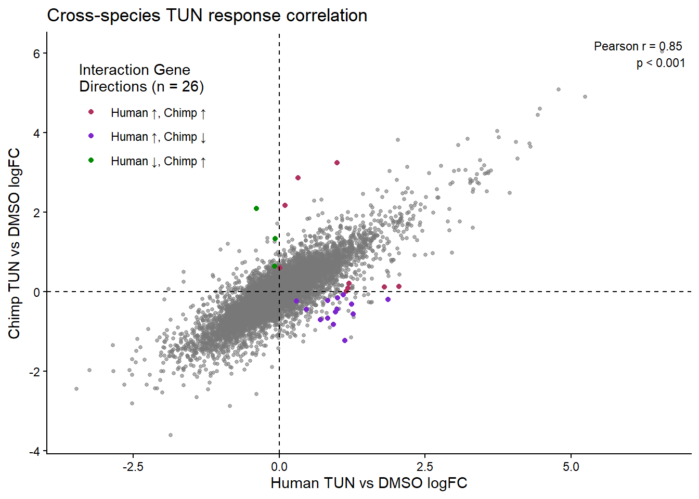
purrr::walk(
PHTO_fc_results,
~ print(.x$plot)
)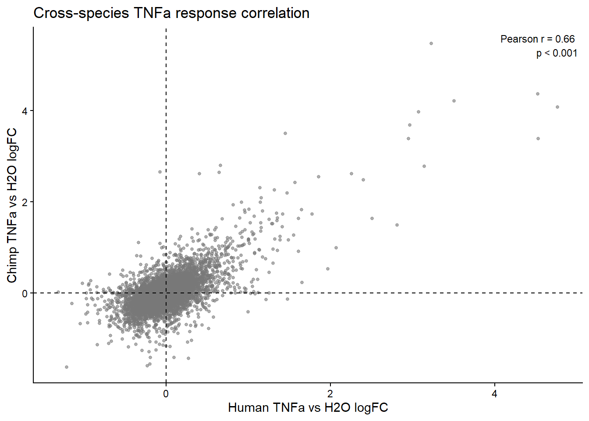
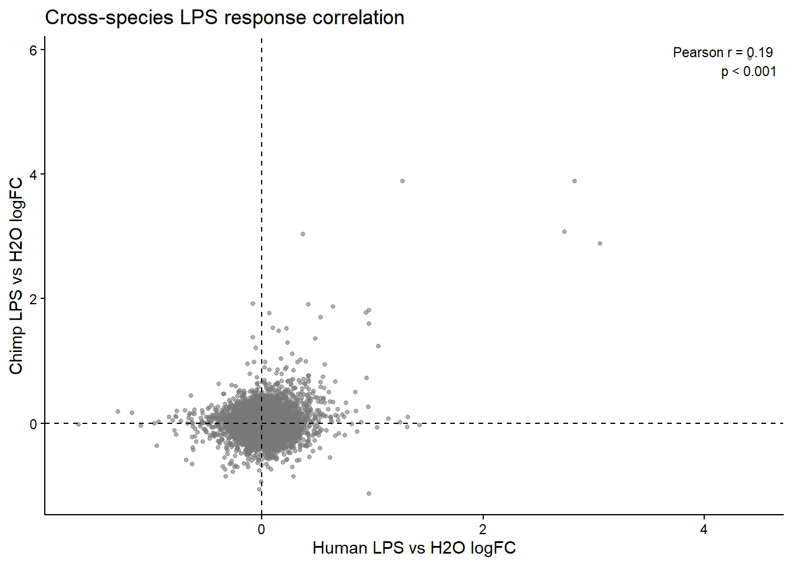
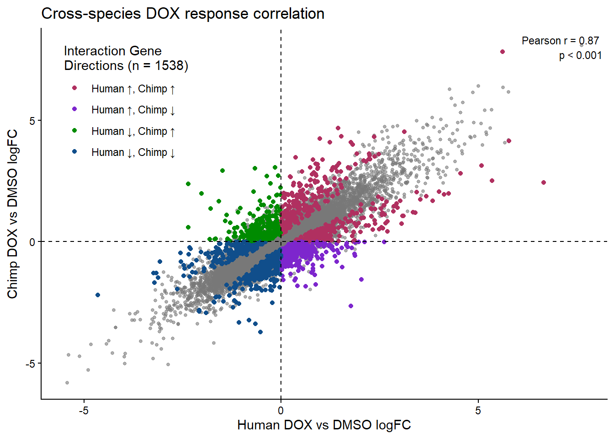
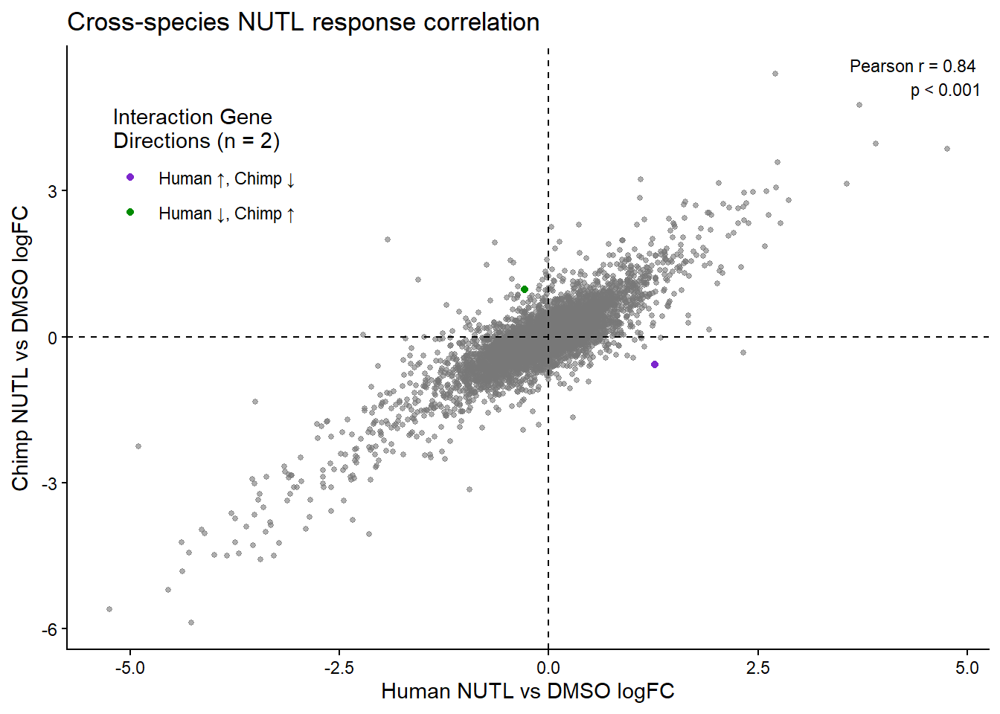

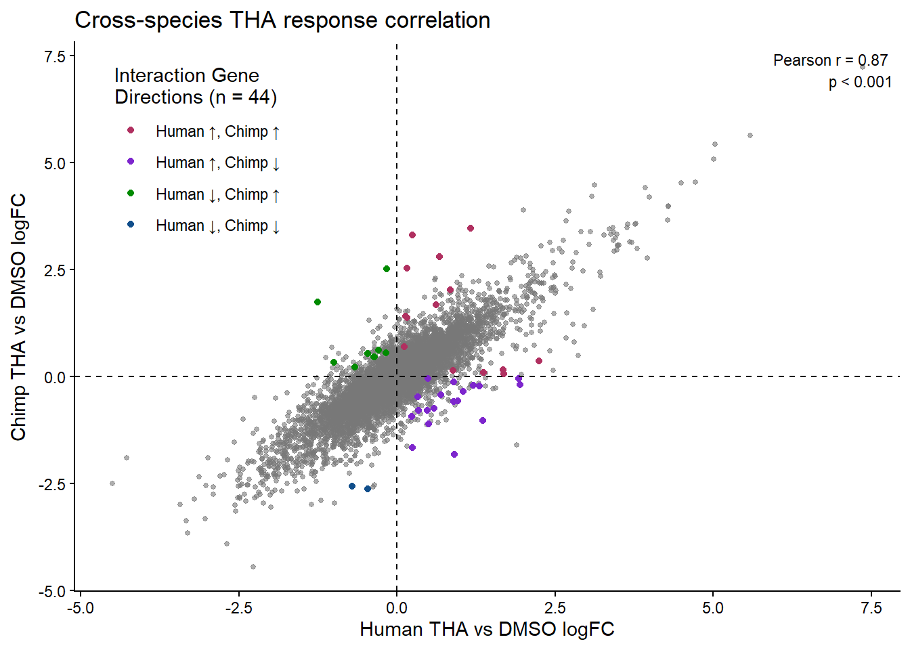
interaction_summary <- purrr::imap_dfr(
PHTO_fc_results,
function(x, treatment) {
x$direction_counts %>%
dplyr::mutate(
Treatment = treatment,
Total_Interaction_Genes = x$n_interaction
)
}
) %>%
dplyr::select(
Treatment,
Direction,
n,
Total_Interaction_Genes
)
interaction_summary Treatment Direction n Total_Interaction_Genes
1 DOX Human ↑, Chimp ↑ 470 1538
2 DOX Human ↑, Chimp ↓ 362 1538
3 DOX Human ↓, Chimp ↑ 238 1538
4 DOX Human ↓, Chimp ↓ 468 1538
5 NUTL Human ↑, Chimp ↓ 1 2
6 NUTL Human ↓, Chimp ↑ 1 2
7 TUN Human ↑, Chimp ↑ 9 26
8 TUN Human ↑, Chimp ↓ 14 26
9 TUN Human ↓, Chimp ↑ 3 26
10 THA Human ↑, Chimp ↑ 14 44
11 THA Human ↑, Chimp ↓ 19 44
12 THA Human ↓, Chimp ↑ 9 44
13 THA Human ↓, Chimp ↓ 2 44PHTO_pearson_summary <- purrr::imap_dfr(
PHTO_fc_results,
function(result, treatment) {
tibble::tibble(
Treatment = treatment,
Pearson_r = result$pearson_r,
Pearson_p = result$pearson_p
)
}
)
PHTO_pearson_summary# A tibble: 6 × 3
Treatment Pearson_r Pearson_p
<chr> <dbl> <dbl>
1 TNFa 0.660 0
2 LPS 0.193 9.53e-119
3 DOX 0.873 0
4 NUTL 0.843 0
5 TUN 0.848 0
6 THA 0.866 0 Significant Interaction Gene Column Charts
plot_interaction_direction_counts <- function(
result,
treatment,
y_limits = NULL,
y_breaks = NULL
) {
# ---------------------------------------------------------
# 1. Count interaction gene directions
# ---------------------------------------------------------
interaction_counts <- result$interaction_df %>%
dplyr::filter(Direction != "Zero/NA") %>%
dplyr::mutate(
Direction_group = dplyr::case_when(
Direction %in% c(
"Human ↑, Chimp ↑",
"Human ↓, Chimp ↓"
) ~ "Same Direction",
Direction %in% c(
"Human ↑, Chimp ↓",
"Human ↓, Chimp ↑"
) ~ "Opposite Direction",
TRUE ~ NA_character_
)
) %>%
dplyr::filter(!is.na(Direction_group)) %>%
dplyr::count(
Direction_group,
Direction
)
# ---------------------------------------------------------
# 2. Calculate total genes in each group
# ---------------------------------------------------------
x_labels <- interaction_counts %>%
dplyr::group_by(Direction_group) %>%
dplyr::summarise(
total = sum(n),
.groups = "drop"
)
# ---------------------------------------------------------
# 3. Create labels
# ---------------------------------------------------------
same_n <- x_labels %>%
dplyr::filter(Direction_group == "Same Direction") %>%
dplyr::pull(total)
opposite_n <- x_labels %>%
dplyr::filter(Direction_group == "Opposite Direction") %>%
dplyr::pull(total)
# If one category contains zero genes
if (length(same_n) == 0) {
same_n <- 0
}
if (length(opposite_n) == 0) {
opposite_n <- 0
}
# ---------------------------------------------------------
# 4. Create plot
# ---------------------------------------------------------
p <- ggplot2::ggplot(
interaction_counts,
ggplot2::aes(
x = Direction_group,
y = n,
fill = Direction
)
) +
ggplot2::geom_col() +
ggplot2::geom_text(
ggplot2::aes(label = n),
position = ggplot2::position_stack(vjust = 0.5),
fontface = "bold",
color = "white",
size = 6
) +
ggplot2::scale_x_discrete(
limits = c(
"Same Direction",
"Opposite Direction"
),
labels = c(
"Same Direction" = paste0(
"Same Direction\n(n = ",
same_n,
")"
),
"Opposite Direction" = paste0(
"Opposite Direction\n(n = ",
opposite_n,
")"
)
)
) +
ggplot2::scale_fill_manual(
values = c(
"Human ↑, Chimp ↑" = "maroon",
"Human ↓, Chimp ↓" = "dodgerblue4",
"Human ↑, Chimp ↓" = "purple3",
"Human ↓, Chimp ↑" = "green4"
),
drop = FALSE
) +
ggplot2::labs(
x = NULL,
y = "Number of DEGs",
title = paste0(
treatment,
" significant interaction genes"
),
fill = NULL
) +
ggplot2::coord_flip() +
ggplot2::theme_classic() +
ggplot2::theme(
axis.title.x = ggplot2::element_text(
size = 24,
face = "bold"
),
axis.title.y = ggplot2::element_text(
size = 24,
face = "bold"
),
axis.text.x = ggplot2::element_text(
size = 20,
face = "bold"
),
axis.text.y = ggplot2::element_text(
size = 20,
face = "bold"
),
plot.title = ggplot2::element_text(
size = 22,
face = "bold",
hjust = 0.5
)
)
# ---------------------------------------------------------
# 5. Optional y-axis settings
# ---------------------------------------------------------
if (!is.null(y_limits) | !is.null(y_breaks)) {
p <- p +
ggplot2::scale_y_continuous(
limits = y_limits,
breaks = y_breaks
)
}
# ---------------------------------------------------------
# 6. Return plot AND data
# ---------------------------------------------------------
return(
list(
plot = p,
interaction_counts = interaction_counts,
group_totals = x_labels
)
)
}TNFa_direction_result <- plot_interaction_direction_counts(
result = PHTO_fc_results$TNFa,
treatment = "TNFα"
)
TNFa_direction_result$plot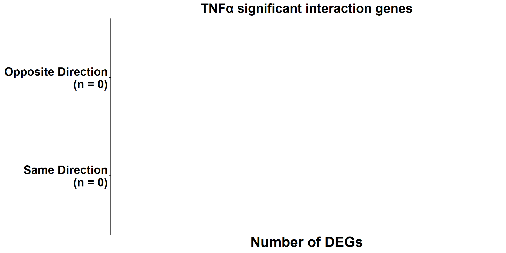
TNFa_direction_result$interaction_counts[1] Direction_group Direction n
<0 rows> (or 0-length row.names)TNFa_direction_result$group_totals# A tibble: 0 × 2
# ℹ 2 variables: Direction_group <chr>, total <int>plot_all_interaction_directions <- function(
PHTO_fc_results,
y_limits = NULL,
y_breaks = NULL
) {
treatment_labels <- c(
"TNFa" = "TNFα",
"LPS" = "LPS",
"DOX" = "DOX",
"NUTL" = "NUTL",
"TUN" = "TUN",
"THA" = "THA"
)
results <- purrr::imap(
PHTO_fc_results,
function(result, treatment_name) {
plot_interaction_direction_counts(
result = result,
treatment = treatment_labels[[treatment_name]],
y_limits = y_limits,
y_breaks = y_breaks
)
}
)
return(results)
}
PHTO_direction_results <- plot_all_interaction_directions(
PHTO_fc_results
# ,
# y_limits = c(0, 1000),
# y_breaks = seq(0, 1000, by = 250)
)
PHTO_direction_results$TNFa$plot
PHTO_direction_results$LPS$plot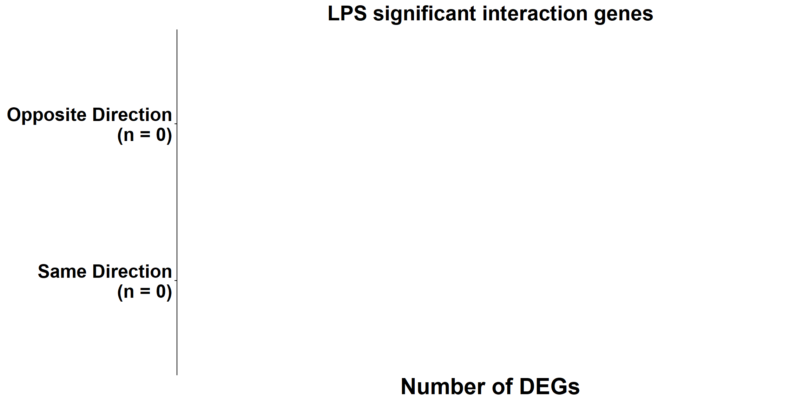
PHTO_direction_results$TUN$plot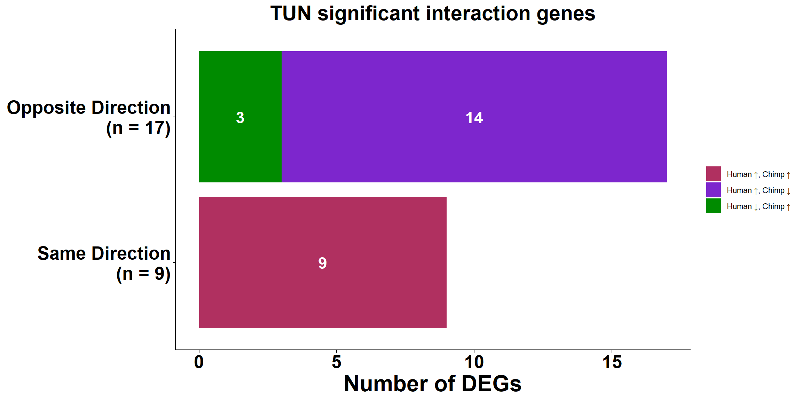
PHTO_direction_results$THA$plot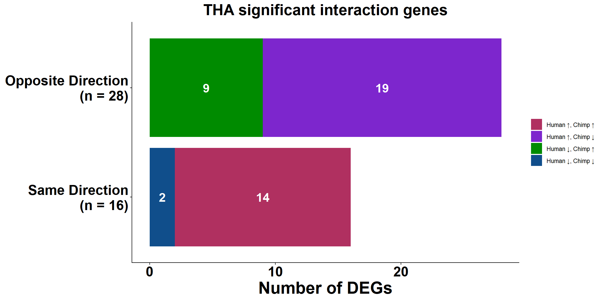
PHTO_direction_results$NUTL$plot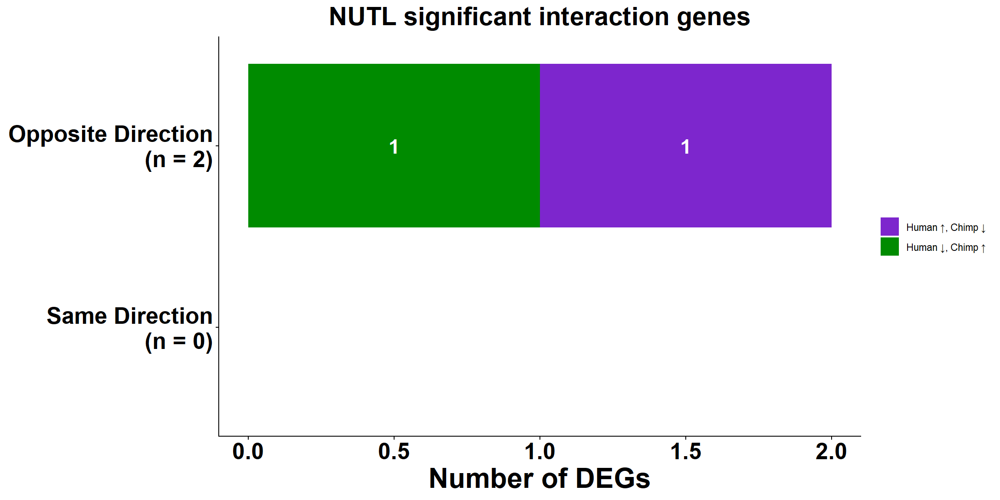
PHTO_direction_results$DOX$plot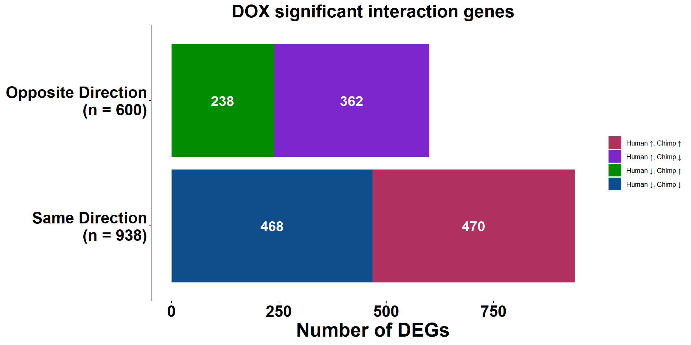
PHTO_direction_summary <- purrr::imap_dfr(
PHTO_direction_results,
function(result, treatment) {
result$interaction_counts %>%
dplyr::mutate(
Treatment = treatment
)
}
) %>%
dplyr::select(
Treatment,
Direction_group,
Direction,
n
)
PHTO_direction_summary <- PHTO_direction_summary %>%
dplyr::group_by(Treatment) %>%
dplyr::mutate(
Total = sum(n),
Percent = 100 * n / Total
) %>%
dplyr::ungroup()
PHTO_direction_summary# A tibble: 13 × 6
Treatment Direction_group Direction n Total Percent
<chr> <chr> <chr> <int> <int> <dbl>
1 DOX Opposite Direction Human ↑, Chimp ↓ 362 1538 23.5
2 DOX Opposite Direction Human ↓, Chimp ↑ 238 1538 15.5
3 DOX Same Direction Human ↑, Chimp ↑ 470 1538 30.6
4 DOX Same Direction Human ↓, Chimp ↓ 468 1538 30.4
5 NUTL Opposite Direction Human ↑, Chimp ↓ 1 2 50
6 NUTL Opposite Direction Human ↓, Chimp ↑ 1 2 50
7 TUN Opposite Direction Human ↑, Chimp ↓ 14 26 53.8
8 TUN Opposite Direction Human ↓, Chimp ↑ 3 26 11.5
9 TUN Same Direction Human ↑, Chimp ↑ 9 26 34.6
10 THA Opposite Direction Human ↑, Chimp ↓ 19 44 43.2
11 THA Opposite Direction Human ↓, Chimp ↑ 9 44 20.5
12 THA Same Direction Human ↑, Chimp ↑ 14 44 31.8
13 THA Same Direction Human ↓, Chimp ↓ 2 44 4.55
sessionInfo()R version 4.6.1 (2026-06-24 ucrt)
Platform: x86_64-w64-mingw32/x64
Running under: Windows 11 x64 (build 26200)
Matrix products: default
LAPACK version 3.12.1
locale:
[1] LC_COLLATE=English_United States.utf8
[2] LC_CTYPE=English_United States.utf8
[3] LC_MONETARY=English_United States.utf8
[4] LC_NUMERIC=C
[5] LC_TIME=English_United States.utf8
time zone: America/Chicago
tzcode source: internal
attached base packages:
[1] stats4 grid stats graphics grDevices utils datasets
[8] methods base
other attached packages:
[1] plotrix_3.8-14 GO.db_3.23.1 gprofiler2_0.2.4
[4] circlize_0.4.18 clusterProfiler_4.20.0 enrichplot_1.32.0
[7] org.Hs.eg.db_3.23.1 AnnotationDbi_1.74.0 IRanges_2.46.0
[10] S4Vectors_0.50.1 Biobase_2.72.0 BiocGenerics_0.58.1
[13] generics_0.1.4 ggVennDiagram_1.5.7 ggrepel_0.9.8
[16] gridExtra_2.3 RColorBrewer_1.1-3 ComplexHeatmap_2.25.3
[19] ggpubr_0.6.3 smplot2_0.2.6 edgeR_4.10.0
[22] limma_3.68.2 cowplot_1.2.0 scales_1.4.0
[25] lubridate_1.9.5 forcats_1.0.1 stringr_1.6.0
[28] dplyr_1.2.1 purrr_1.2.2 readr_2.2.0
[31] tidyr_1.3.2 tibble_3.3.1 ggplot2_4.0.3
[34] tidyverse_2.0.0 workflowr_1.7.2
loaded via a namespace (and not attached):
[1] splines_4.6.1 later_1.4.8 ggplotify_0.1.3
[4] polyclip_1.10-7 enrichit_0.1.5 rpart_4.1.27
[7] httr2_1.2.3 lifecycle_1.0.5 rstatix_1.0.0
[10] doParallel_1.0.17 rprojroot_2.1.1 processx_3.9.0
[13] lattice_0.22-9 MASS_7.3-65 backports_1.5.1
[16] magrittr_2.0.5 plotly_4.12.0 Hmisc_5.2-5
[19] sass_0.4.10 rmarkdown_2.31 jquerylib_0.1.4
[22] yaml_2.3.12 httpuv_1.6.17 otel_0.2.0
[25] ggtangle_0.1.2 DBI_1.3.0 abind_1.4-8
[28] yulab.utils_0.2.4 nnet_7.3-20 tweenr_2.0.3
[31] rappdirs_0.3.4 aisdk_1.4.12 git2r_0.36.2
[34] gdtools_0.5.1 tidytree_0.4.8 codetools_0.2-20
[37] DOSE_4.6.0 ggforce_0.5.0 tidyselect_1.2.1
[40] shape_1.4.6.1 aplot_0.3.1 farver_2.1.2
[43] matrixStats_1.5.0 base64enc_0.1-6 Seqinfo_1.2.0
[46] jsonlite_2.0.0 GetoptLong_1.1.1 Formula_1.2-5
[49] iterators_1.0.14 systemfonts_1.3.2 foreach_1.5.2
[52] tools_4.6.1 ggnewscale_0.5.2 treeio_1.36.1
[55] Rcpp_1.1.1-1.1 glue_1.8.1 xfun_0.57
[58] qvalue_2.44.0 withr_3.0.3 fastmap_1.2.0
[61] callr_3.8.0 digest_0.6.39 timechange_0.4.0
[64] R6_2.6.1 gridGraphics_0.5-1 colorspace_2.1-2
[67] RSQLite_3.52.0 utf8_1.2.6 fontLiberation_0.1.0
[70] data.table_1.18.4 httr_1.4.8 htmlwidgets_1.6.4
[73] scatterpie_0.2.6 whisker_0.4.1 pkgconfig_2.0.3
[76] gtable_0.3.6 blob_1.3.0 S7_0.2.2
[79] XVector_0.52.0 htmltools_0.5.9 fontBitstreamVera_0.1.1
[82] carData_3.0-6 pwr_1.3-0 clue_0.3-68
[85] png_0.1-9 ggfun_0.2.1 knitr_1.51
[88] rstudioapi_0.19.0 tzdb_0.5.0 reshape2_1.4.5
[91] rjson_0.2.23 checkmate_2.3.4 nlme_3.1-169
[94] cachem_1.1.0 zoo_1.8-15 GlobalOptions_0.1.4
[97] parallel_4.6.1 foreign_0.8-91 pillar_1.11.1
[100] vctrs_0.7.3 promises_1.5.0 tidydr_0.0.6
[103] car_3.1-5 cluster_2.1.8.2 htmlTable_2.5.0
[106] evaluate_1.0.5 cli_3.6.6 locfit_1.5-9.12
[109] compiler_4.6.1 rlang_1.2.0 crayon_1.5.3
[112] ggsignif_0.6.4 labeling_0.4.3 getPass_0.2-4
[115] plyr_1.8.9 fs_2.1.0 ggiraph_0.9.6
[118] stringi_1.8.7 viridisLite_0.4.3 BiocParallel_1.46.0
[121] Biostrings_2.80.0 lazyeval_0.2.3 Matrix_1.7-5
[124] GOSemSim_2.38.0 fontquiver_0.2.1 hms_1.1.4
[127] patchwork_1.3.2 bit64_4.8.0 KEGGREST_1.52.2
[130] statmod_1.5.2 igraph_2.3.3 broom_1.0.13
[133] memoise_2.0.1 bslib_0.11.0 ggtree_4.2.0
[136] bit_4.6.0 gson_0.2.0 ape_5.8-1